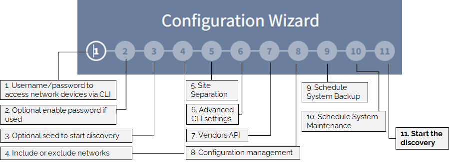
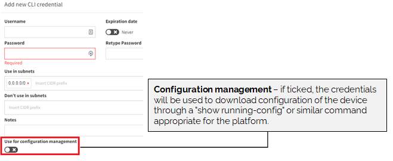
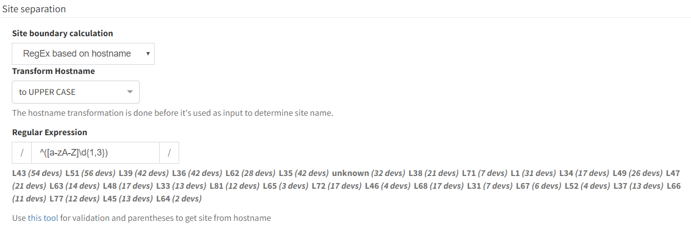

Configuration Wizard
After login in for the first time, you will be presented with the Configuration Wizard. This will guide you throughout the initial setup, in order to start the first discovery.

01 -- Configure Credentials
Network infrastructure credentials are stored in Settings → Authentication. These credentials use IP Fabric to access the CLI of the network devices. Read-only (privilege level 1) credentials are sufficient for the discovery.

If credentials are provided for configuration changes tracking and saved configuration consistency (i.e. they allow commands such as show run and show start), mark this set of credentials using the checkbox Use for configuration management.

You can limit the validity of the credentials just for a part of your network by Use in subnet field. If more credentials are specified, a top-down algorithm is used when trying to login into a network device or the credentials priority can be changed using drag and drop.

02 -- Enable mode passwords (optional)
Those credentials are stored in Settings → Authentication. Privileged credentials are generally only necessary for configuration management. However, some platforms require privileged credentials to access basic network state information, such as MST spanning-tree state or 802.1X session information.
Note
If enable mode is configured with no password and is needed for discovery, any enabled password information needs to be set! Otherwise, IP Fabric won’t even try the enable command.

Warning
Please be careful to configure enable password only for devices (subnets) that need the enable command to be included. We encountered some problems with Cisco ISE. When an incorrect enable password was entered, the user account was locked and IP Fabric wasn't able to finish the discovery for those devices.
03 -- Starting point for the discovery (optional)
If you know a particular starting point for discovering the network, the information can be entered at Settings → Discovery Seed. This option does not exclude any networks from discovery (for this option see next step).
The starting points can be management IP addresses or networks, or existing inventory data can also be imported.
If no seed information is entered, the discovery will begin from the current default gateway. The system will try to trace RFC6890 subnets (by default) to determine the immediate next hops to log in to.

04 -- Include or Exclude networks in Discovery
By default, there are no limitations on discovery, and all IP addresses are allowed (i.e. Include scope is 0.0.0.0/0).
Discovery can be limited to one or more subnets using Settings → Advanced → Discovery → IP Scope → IP networks to include in discovery and analysis. Enter one or more subnets to limit the discovery process to addresses from particular networks.
Specific parts of the network can be also excluded from discovery using Settings → Advanced → Discovery → IP Scope → IP networks to exclude from discovery and analysis.

IP Scope settings are not applied to Vendor API (everything is downloaded and used in discovery).
Exclude option takes precedence over include. For example
- IP networks to include in discovery and analysis:
10.0.0.0/8 - IP networks to exclude from discovery and analysis:
10.24.0.0/16
Results in 10.0.0.0/8 being scanned excluding 10.24.0.0/16 subnet.
05 -- Site Separation
The site represents a separate collection of devices. A site can be a branch, a factory, a production floor, a campus, or anything that might represent a logical group for a user.
By default, the Site distribution is generated automatically after the discovery process ends and is based on the rules described below. It can also be triggered manually without the need for the whole discovery process by going to Settings → Advanced → Discovery → Site separation (in global or Snapshot settings).
Routing and switching domain
Note
With this setting, you can manually edit the distribution of sites later. Sites can be also renamed.
By default, the site is comprised of the topology of all contiguously interconnected protocols, and the boundary of a site is formed by the network protocol relation that is not under management using the provided authentication credentials. The default separation is useful for MPLS networks where directly connected routing infrastructure at the site’s edge is not accessible. For situations where an inaccessible routed firewall is used at the site (i.e. device under different management team), an option Firewall at site can be turned on so the infrastructure before and behind the firewall is not separated into two different sites.
For networks that have direct routing connectivity between sites, such as DMVPN or Leased Lines (usually over Serial or MFR interfaces), an option to separate the site using tunnel and/or serial the interface should be selected.
For configuration go to Settings → Advanced → Discovery → Site separation.

Regular expression on hostname
Note
Site distribution cannot be changed manually when regex rules are used. Sites cannot be renamed.
Alternatively, site separation can follow a specific Regular Expression (RegEx) where separation will be performed based on portion of a device hostname.
Go to Settings → Advanced → Discovery → Site separation and change Site boundary calculation to RegEx based on hostname.
Transform hostname is used to normalize site names based on hostname:
-
Upper case (default) -- having first hostname
PRAGUE-RTR1and second hostnameprague-rtr2, results in having both devices at one site namedPRAGUE. -
Lower case -- having first hostname
PRAGUE-RTR1and second hostnameprague-rtr2, results in having both devices at one site namedprague. -
No transformation -- having first hostname
PRAGUE-RTR1and second hostnameprague-rtr2, results in having every device located in its own site namedPRAGUEandpraguerespectively.
In the last step, introduce the Regular Expression. Use regex101 for validation and parentheses to extract the site from the hostname correctly.
Hint
If you cannot cover the names of the sites with one regex, you can use logical or. Use | (pipe) between RegEx rules.
The change in the regex is displayed as a live preview. Once the regex is ready, click Site overview with this RegEx and observe results. Click Save (in the upper right corner).

Example
We have several locations whose name is logically designed as one letter with one to three numbers. From the point of view of a regex, such a site can generally be expressed as ^(\[a-zA-Z\]\\d{1,3}). Unfortunately, we have two other sites that do not fit into this schema. These sites can be defined with their own regex and this can be added to the original one using the logical operator or:
^([a-zA-Z\]\d{1,3}|HWLAB|static\d{1})
to combine these 3 separate options together.
For devices that do not match the RegEx, IP Fabric automatically adds those to the site based on protocol relation (CDP, LLDP, STP, L3) under the condition that there's only a single relation to one particular site. This feature is especially useful for Access Points and similar devices, that do not follow the standard naming conventions and are linked to one specific location.
Manual Site Separation
Note
With this setting, you can manually edit the distribution of sites.
The Manual Site Separation option is complementary to two previous options and provides the users with full flexibility. It can be enabled in Inventory > Sites > Manual Separation where any device's site can be adjusted based on more attributes.